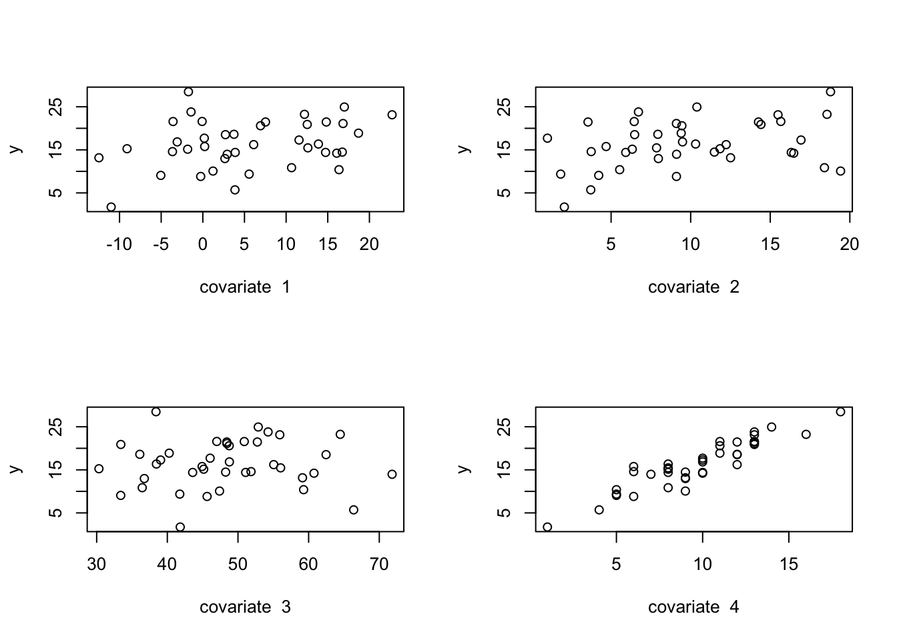
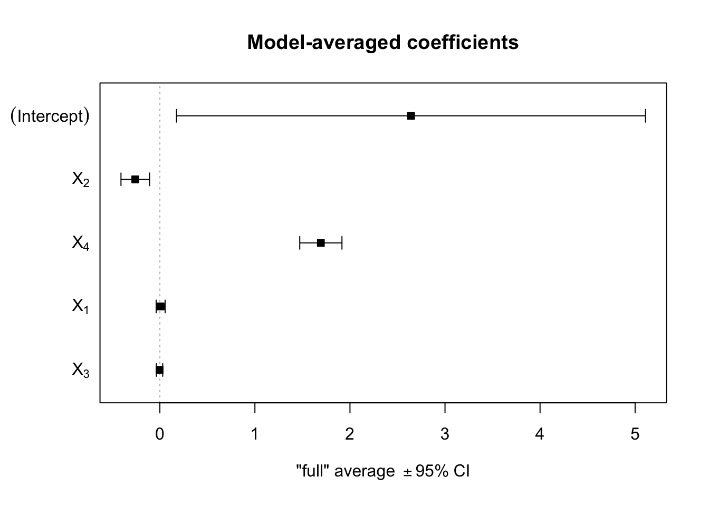
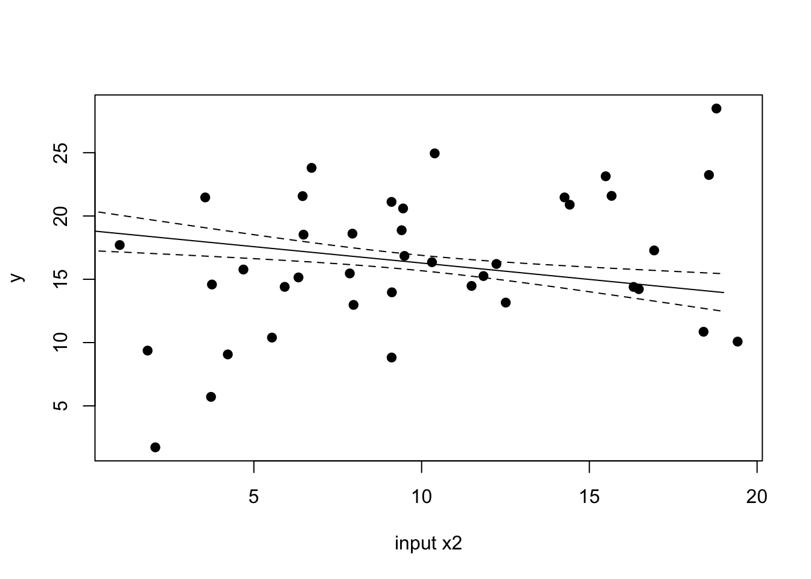
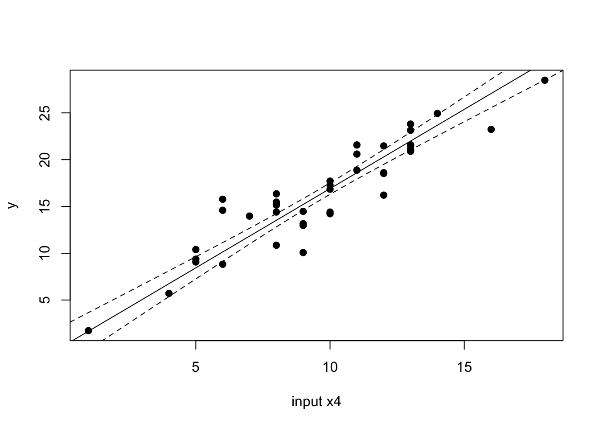
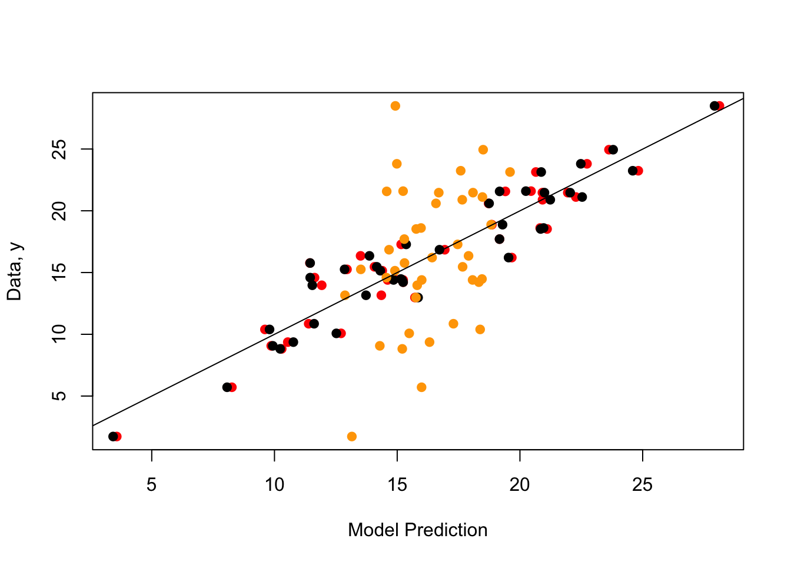

Please download and print the lecture materials from Bblearn. After lectures, the recordings will appear in the Bblearn Collaborate Ultra section.
7.2 Generate the data
Here we will demonstrate two approaches to model comparison. But first let’s generate data, in the same way we did for multiple linear regression in (Chapter 4). Note that in this case, we will specify that two of the input variables have zero slope (i.e., no linear association with the outcome variable).
n =40n_covariate =4p = n_covariate +1betas =vector("numeric", length = p)xmat =matrix(0, nrow = n, ncol = p)sigma =2.25# Column for interceptxmat[,1] =1# Generate the covariate data randomly:set.seed(5)xmat[,2] =rnorm(n, mean =5, sd =8)xmat[,3] =runif(n, min =0, max =20)xmat[,4] =rchisq(n, df =50)xmat[,5] =rpois(n, lambda =10)# Set the betas:betas[1] =1.0betas[2] =0.0betas[3] =-0.2betas[4] =0.0betas[5] =1.8# Calculate the observed 'y', adding residual errory = xmat %*% betas +rnorm(n, mean =0, sd = sigma)par(mfrow=c(2,2))for(i in2:p){plot(y ~ xmat[,i],xlab =paste("covariate ", i-1))}

# Create a data.framemy_df =data.frame(y, xmat[,2:5])head(my_df)
# Run the model, report the summarym1 =lm(y ~1+ X1 + X2 + X3 + X4, data = my_df)m1_summary =summary(m1)m1_summary
Call:
lm(formula = y ~ 1 + X1 + X2 + X3 + X4, data = my_df)
Residuals:
Min 1Q Median 3Q Max
-3.3257 -1.4053 -0.4331 1.3299 4.3178
Coefficients:
Estimate Std. Error t value Pr(>|t|)
(Intercept) 3.41757 1.82632 1.871 0.06968 .
X1 0.03245 0.03810 0.852 0.40016
X2 -0.26989 0.07297 -3.698 0.00074 ***
X3 -0.01823 0.03267 -0.558 0.58050
X4 1.68543 0.11083 15.207 < 2e-16 ***
---
Signif. codes: 0 '***' 0.001 '**' 0.01 '*' 0.05 '.' 0.1 ' ' 1
Residual standard error: 1.94 on 35 degrees of freedom
Multiple R-squared: 0.8901, Adjusted R-squared: 0.8775
F-statistic: 70.86 on 4 and 35 DF, p-value: 2.741e-16
7.3 Parsimony via model simplification
We will successively simplify the model until we find a “minimally acceptable” model that explains the most variability in the outcome variable.
There are several built-in functions in R that can help us make quantitatively justified decisions about which input variables can be dropped from the full model to determine our minimally acceptable model. First, we can use the \(F\)-test as described in lecture. This can be implemented by the anova() function.
Based on the summary() output, we see that input variable 3 (\(x_3\)) has the least significant effect on \(y\), so we will drop that first and proceed from there.
# The full model lives in object m1formula(m1)
y ~ 1 + X1 + X2 + X3 + X4
# Create a new model with the update() function# This function has a strange notation, but so it goes...m2 =update(m1, .~. -X3)formula(m2)
y ~ X1 + X2 + X4
summary(m2)
Call:
lm(formula = y ~ X1 + X2 + X4, data = my_df)
Residuals:
Min 1Q Median 3Q Max
-3.4492 -1.3713 -0.3323 1.2450 4.3718
Coefficients:
Estimate Std. Error t value Pr(>|t|)
(Intercept) 2.54371 0.92986 2.736 0.009605 **
X1 0.02863 0.03712 0.771 0.445496
X2 -0.26530 0.07181 -3.694 0.000728 ***
X4 1.68217 0.10962 15.346 < 2e-16 ***
---
Signif. codes: 0 '***' 0.001 '**' 0.01 '*' 0.05 '.' 0.1 ' ' 1
Residual standard error: 1.921 on 36 degrees of freedom
Multiple R-squared: 0.8891, Adjusted R-squared: 0.8799
F-statistic: 96.22 on 3 and 36 DF, p-value: < 2.2e-16
# Use anova() to test if the drop of X3 is justifiedanova(m2, m1)
Analysis of Variance Table
Model 1: y ~ X1 + X2 + X4
Model 2: y ~ 1 + X1 + X2 + X3 + X4
Res.Df RSS Df Sum of Sq F Pr(>F)
1 36 132.91
2 35 131.73 1 1.1712 0.3112 0.5805
Remember that the hypothesis tested is: \[H_0:\text{simple model}\]\[H_A:\text{complex model}\] So if the \(p \ge 0.05\), as usual, we cannot reject the null hypothesis. In this case, it means that the simple model is just as good as the more complex model. Therefore, we are justified in dropping \(x_3\). From the data, we could not detect that \(x_3\) has a statistically meaningful linear relationship with the outcome data \(y\).
Let’s manually calculate that \(F\) test statistic and associated \(p\)-value to verify that we understand how the test works.
# Extract the residuals (errors)resid_null = m2$residualsresid_full = m1$residuals# Sum of Square Errors (SSE)sse_null =crossprod(resid_null)sse_full =crossprod(resid_full)# degrees of freedomdf_null = n-(p-1) # we dropped one input variabledf_full = n-p# Calculate F_statf_test = ((sse_null - sse_full)/(df_null - df_full)) / (sse_full/df_full)# Degrees of freedom for the F distribution:df_numerator = df_null - df_fulldf_denominator = df_fullp_m1vm2 =1-pf(f_test,df1 = df_numerator,df2 = df_denominator)# Compare to anova()f_test; p_m1vm2
Let’s continue with the simplification process, using the anova() function.
# model 2 is the current best.summary(m2)
Call:
lm(formula = y ~ X1 + X2 + X4, data = my_df)
Residuals:
Min 1Q Median 3Q Max
-3.4492 -1.3713 -0.3323 1.2450 4.3718
Coefficients:
Estimate Std. Error t value Pr(>|t|)
(Intercept) 2.54371 0.92986 2.736 0.009605 **
X1 0.02863 0.03712 0.771 0.445496
X2 -0.26530 0.07181 -3.694 0.000728 ***
X4 1.68217 0.10962 15.346 < 2e-16 ***
---
Signif. codes: 0 '***' 0.001 '**' 0.01 '*' 0.05 '.' 0.1 ' ' 1
Residual standard error: 1.921 on 36 degrees of freedom
Multiple R-squared: 0.8891, Adjusted R-squared: 0.8799
F-statistic: 96.22 on 3 and 36 DF, p-value: < 2.2e-16
# Now, drop x1 and checkm3 =update(m2, .~. -X1)# Check:anova(m3, m2)
Analysis of Variance Table
Model 1: y ~ X2 + X4
Model 2: y ~ X1 + X2 + X4
Res.Df RSS Df Sum of Sq F Pr(>F)
1 37 135.10
2 36 132.91 1 2.1969 0.5951 0.4455
# The p-value is not significant, so we# can accept the null (simpler model)summary(m3)
Call:
lm(formula = y ~ X2 + X4, data = my_df)
Residuals:
Min 1Q Median 3Q Max
-3.4900 -1.4021 -0.1473 1.3871 4.3194
Coefficients:
Estimate Std. Error t value Pr(>|t|)
(Intercept) 2.46667 0.91941 2.683 0.010847 *
X2 -0.25788 0.07077 -3.644 0.000819 ***
X4 1.69901 0.10683 15.904 < 2e-16 ***
---
Signif. codes: 0 '***' 0.001 '**' 0.01 '*' 0.05 '.' 0.1 ' ' 1
Residual standard error: 1.911 on 37 degrees of freedom
Multiple R-squared: 0.8873, Adjusted R-squared: 0.8812
F-statistic: 145.6 on 2 and 37 DF, p-value: < 2.2e-16
# Remove X2 and checkm4 =update(m3, .~. -X2)anova(m4, m3)
Analysis of Variance Table
Model 1: y ~ X4
Model 2: y ~ X2 + X4
Res.Df RSS Df Sum of Sq F Pr(>F)
1 38 183.58
2 37 135.10 1 48.478 13.277 0.0008195 ***
---
Signif. codes: 0 '***' 0.001 '**' 0.01 '*' 0.05 '.' 0.1 ' ' 1
# Ok now the p-value is significant# We need to reject the null (simpler model)# We *cannot* reliably remove X2# Try X4 just in case:m5 =update(m3, .~. -X4)anova(m3, m5)
Analysis of Variance Table
Model 1: y ~ X2 + X4
Model 2: y ~ X2
Res.Df RSS Df Sum of Sq F Pr(>F)
1 37 135.1
2 38 1058.6 -1 -923.53 252.92 < 2.2e-16 ***
---
Signif. codes: 0 '***' 0.001 '**' 0.01 '*' 0.05 '.' 0.1 ' ' 1
# p-value is significant again# need to reject the null# we cannot drop X4# Therefore, m3 is most parsimonioussummary(m3)
Call:
lm(formula = y ~ X2 + X4, data = my_df)
Residuals:
Min 1Q Median 3Q Max
-3.4900 -1.4021 -0.1473 1.3871 4.3194
Coefficients:
Estimate Std. Error t value Pr(>|t|)
(Intercept) 2.46667 0.91941 2.683 0.010847 *
X2 -0.25788 0.07077 -3.644 0.000819 ***
X4 1.69901 0.10683 15.904 < 2e-16 ***
---
Signif. codes: 0 '***' 0.001 '**' 0.01 '*' 0.05 '.' 0.1 ' ' 1
Residual standard error: 1.911 on 37 degrees of freedom
Multiple R-squared: 0.8873, Adjusted R-squared: 0.8812
F-statistic: 145.6 on 2 and 37 DF, p-value: < 2.2e-16
Therefore, model 3, is the minimum acceptable model: \[y_i = \beta_0 + \beta_2 x_{2,i} + \beta_4 x_{4,i} + \epsilon_i\]
We could actually come to the same result, using a different, more automated function, step(). However, this function uses a different metric to test the null vs. full model hypothesis, the Akaike nformation criterion (AIC), which is calculated as: \[\text{AIC} = - 2ln(\text{Model Likelihood}) + 2k\] And \(k\) is the number of estimated parameters in the model. We can then compare the AIC values to decide which models are “best”. We will learn more about AIC later.
Let’s use the step() function and verify it gives us the same final outcome.
Call:
lm(formula = y ~ X2 + X4, data = my_df)
Residuals:
Min 1Q Median 3Q Max
-3.4900 -1.4021 -0.1473 1.3871 4.3194
Coefficients:
Estimate Std. Error t value Pr(>|t|)
(Intercept) 2.46667 0.91941 2.683 0.010847 *
X2 -0.25788 0.07077 -3.644 0.000819 ***
X4 1.69901 0.10683 15.904 < 2e-16 ***
---
Signif. codes: 0 '***' 0.001 '**' 0.01 '*' 0.05 '.' 0.1 ' ' 1
Residual standard error: 1.911 on 37 degrees of freedom
Multiple R-squared: 0.8873, Adjusted R-squared: 0.8812
F-statistic: 145.6 on 2 and 37 DF, p-value: < 2.2e-16
We can see the selected model only includes \(x_2\) and \(x_4\), just like our decision based on the \(F\)-test.
7.4 Model averaging
Recall from lecture that model averaging represents another philosophical approach to model selection and model comparison. In this case, the idea is that we cannot know with certainty which model of a nested sub-set of models is “true”. Therefore, instead of reporting the slopes and intercepts from the single “best” model that based on parsimony, we should report “averaged” values of slopes and intercepts. These averages will take into account all of the possible nested subset of models in which those slopes and intercepts could have been calculated. This averaging procedure can produce slope and intercept estimates (as well as estimates of their uncertainty) that are less biased, and can perhaps yield better predictions of future data.
We will use the MuMIn package (Multimodel Inference) to do model averaging later, but first we will do it manually.
7.4.1 Required calculations
Recall that to come up with averaged estimates of model parameters (e.g., model-averaged slopes) we need to calculate weighted averages. These averages are weighted by how well sub-models explain the data. Following lecture, we will use the corrected \(AIC\), noted as \(AIC_c\), to calculate how well a model explains the data.
\[\text{AIC}_c = - 2ln(\text{Model Likelihood}) + 2k + \frac{2K(K+1)}{n-K-1}\] where \(n\) is the number of data observations. Then, to calculate the weights we need to see how much each sub-model deviates from the best model. For this deviation we calculate, for sub-model \(i\):
\[\Delta \text{AIC}_{c,i} = \text{AIC}_{c,\text{best}} - \text{AIC}_{c,i}\] The weight of sub-model \(i\) is:
\[w_i = \frac{\text{exp}(-\Delta \text{AIC}_{c,i} / 2)}{\sum_{r=1}^{R} \text{exp}(-\Delta \text{AIC}_{c,r} / 2)} \] And \(R\) is the number of submodels being examined.
We are now ready to calculate the weighted average of any parameter of interest in the full model, \(\theta\):
\[\hat{\bar{\theta}} = \sum_{r=1}^{R} w_r \hat{\theta}_{r}\] Here, \(\hat{\bar{\theta}}\) is the model-averaged estimate of parameter \(\theta\), \(w_r\) is the weight of sub-model \(r\), and \(\hat{\theta}_r\) is the parameter estimate derived from sub-model \(r\).
We can also calculate the new averaged uncertainty in the parameter estimate:
\[\hat{\text{var}}(\hat{\bar{\theta}}) = \sum_{r=1}^{R} w_r \left( \hat{\text{var}}(\hat{\theta})_r + (\hat{\theta} - \hat{\bar{\theta}})^2 \right) \] Here, \(\hat{\text{var}}(\hat{\bar{\theta}})\) is the standard error of the averaged model parameter, whereas \(\hat{\text{var}}(\hat{\theta})_r\) is the standard error of model parameter \(\theta\) estimated from sub-model \(r\).
7.4.2 Manual calculation
Let’s see if we can manually calculate all of this from a less complex example model. Imagine our full model is a model that only has two input variables. We’ll use our simulated data set from above. (Of course, we know this is a poor model, but we’re just doing a case-study here.)
# Full model:full_mod =lm(y~1+X1+X2, data = my_df)
If this full model has two inputs, then the number of sub-models is \(2^2 = 4\), which iteratively drop one or both input variables. Now, run each sub-model. I know, this is tedious.
sub_m2 =update(full_mod, .~. -X2)sub_m3 =update(full_mod, .~. -X1)sub_m4 =update(full_mod, .~. -X2-X1) # Intercept only# Store all models in a list for easy looping later:model_list =list( full_mod, sub_m2, sub_m3, sub_m4)# how many models?n_mod =4
To get the model-averaged slopes of inputs \(x_1\) and \(x_2\), we’ll need to calculate \(AIC_c\) values and model weights. We’ll store calculations in arrays as much as possible, so we can loop through.
Let’s start with \(AIC_c\). Fortunately, there’s a built-in function for this in the MuMIn package, but we’ll do one manually first.
# Extract neg-log-likelihood from full model:nll_full =-1*logLik(full_mod)# This is in a weird format, so we'll convert:nll_full =as.numeric(nll_full)k_full =4# two slopes + 1 intercept + residual sigma# Calculate AIC_caic_c_full =2*nll_full +2*k_full + (2*k_full*(k_full +1))/(n - k_full -1)aic_c_full
[1] 251.5063
# Check with built-inlibrary(MuMIn)AICc(full_mod)
[1] 251.5063
# Now calculate all:AICc_vec =NULLfor(i in1:n_mod){ AICc_vec[i] =AICc(model_list[[i]])}AICc_vec
[1] 251.5063 252.3124 251.2157 253.8381
We can see that the ‘best’ model, according to \(AIC_c\) is the sub_m3, which includes the intercept and only input \(x_2\). This makes sense, because we know that the slope of \(x_1\) was simulated as zero.
Let’s now calculate the \(\Delta \text{AIC}_c\).
# Best AICcAICc_best =min(AICc_vec)#\Delta AIC_cDelta_AICc_vec = AICc_vec - AICc_bestDelta_AICc_vec
[1] 0.290611 1.096742 0.000000 2.622409
Now we can calculate the model weights (i.e., the value representing how “good” each model is, relative to the best model).
# Calculate the denominator of the weight calculationweight_denom =0for(i in1:n_mod){ weight_denom = weight_denom +exp( -Delta_AICc_vec[i] /2 )}weight_denom
[1] 2.712144
# Now the individual weights:weight =NULLfor(i in1:n_mod){ weight[i] =exp( -Delta_AICc_vec[i] /2) / weight_denom}weight
[1] 0.31884668 0.21307516 0.36871201 0.09936614
# Sum to 1?sum(weight)
[1] 1
We can see the “better” models, based on \(AIC_c\) have higher weights, and the weight vector should add to 1.
Let’s calculate the model-averaged slope estimate for input \(x_2\). To do this, we’ll first need to extract the estimate from each sub-model. This is a little tedious, because we need to know which coefficient refers to \(x_2\) in each sub-model object (or if the coefficient is absent and therefore equal to zero).
coef_x2 =NULLcoef_x2[1] =coef(model_list[[1]])[3]coef_x2[2] =0# Absent from this sub-modelcoef_x2[3] =coef(model_list[[3]])[2]coef_x2[4] =0# Absent from this sub-modelcoef_x2
[1] 0.2975017 0.0000000 0.3649074 0.0000000
# Averaged, based on model weight:avg_coef_x2 =0for(i in1:n_mod){ avg_coef_x2 = avg_coef_x2 + weight[i] * coef_x2[i]}avg_coef_x2
[1] 0.2294032
We can see the model-averaged slope estimate for input \(x_2\) is slightly less than the estimate from the full model.
summary(full_mod)
Call:
lm(formula = y ~ 1 + X1 + X2, data = my_df)
Residuals:
Min 1Q Median 3Q Max
-9.9147 -3.6749 0.6359 3.4050 10.5608
Coefficients:
Estimate Std. Error t value Pr(>|t|)
(Intercept) 12.58750 1.78926 7.035 2.55e-08 ***
X1 0.14204 0.09854 1.441 0.1579
X2 0.29750 0.16725 1.779 0.0835 .
---
Signif. codes: 0 '***' 0.001 '**' 0.01 '*' 0.05 '.' 0.1 ' ' 1
Residual standard error: 5.205 on 37 degrees of freedom
Multiple R-squared: 0.1637, Adjusted R-squared: 0.1185
F-statistic: 3.621 on 2 and 37 DF, p-value: 0.03662
coef(full_mod)[3]
X2
0.2975017
I’ll leave calculating the model-averaged standard error of the slopes as an exercise for you as a student.
As I mentioned above, fortunately someone created a package to do this model averaging for us and remove a lot of the tedium.
First, run all sub-models using the MuMIn::dredge() function.
# Required for MuMIn::dredge functionalityoptions(na.action ="na.fail")# Fit all sub-models:dredge_test =dredge(full_mod)
This summary() statement shows the model-averaged values of slopes of \(x_1\) and \(x_2\), and the intercept. We care about the “full average”. You can see the averaged estimate of the slope for \(x_2\) matches our manual calculation. For emphasis:
test_average$coefficients[1,2];
[1] 0.2294032
avg_coef_x2
[1] 0.2294032
7.4.3 Back to more complex model
Ok, but our full model had four input variables, which means the number of sub-models is \(4^2 = 16\). Let’s not do that manually, but instead use the MuMIn::model.avg() function.
# Reminder, m1 was our full model:summary(m1)
Call:
lm(formula = y ~ 1 + X1 + X2 + X3 + X4, data = my_df)
Residuals:
Min 1Q Median 3Q Max
-3.3257 -1.4053 -0.4331 1.3299 4.3178
Coefficients:
Estimate Std. Error t value Pr(>|t|)
(Intercept) 3.41757 1.82632 1.871 0.06968 .
X1 0.03245 0.03810 0.852 0.40016
X2 -0.26989 0.07297 -3.698 0.00074 ***
X3 -0.01823 0.03267 -0.558 0.58050
X4 1.68543 0.11083 15.207 < 2e-16 ***
---
Signif. codes: 0 '***' 0.001 '**' 0.01 '*' 0.05 '.' 0.1 ' ' 1
Residual standard error: 1.94 on 35 degrees of freedom
Multiple R-squared: 0.8901, Adjusted R-squared: 0.8775
F-statistic: 70.86 on 4 and 35 DF, p-value: 2.741e-16
# Fit all sub-models:dredge_m1 =dredge(m1)
Fixed term is "(Intercept)"
# Average the models:m1_average =model.avg(dredge_m1, fit =TRUE)summary(m1_average)
Notice how we see the model with inputs \(x_2\) and \(x_4\) is the best, based on \(AIC_c\) (note this is the model labeled as 24 meaning it inclues inputs 2 and 4).
We can also plot the model parameter estimates with their confidence intervals:
# Plot the coefficient estimates (from the averaged model)plot(m1_average)

Finally, we can use the predict() function as we have before to visualize the effect of each input variable on the outcome. Here, we will show the independent, model-averaged effect of \(x_2\), when all other input variables are held at their average values. Then, we’ll do the same for \(x_4\).
# Predict from the average model:# How does y change as a function of x2, while # other inputs held at their average?new_df =data.frame(X1 =rep(mean(my_df$X1), 100),X2 =seq(0, 19, length.out =100),X3 =rep(mean(my_df$X3), 100),X4 =rep(mean(my_df$X4), 100))pred_m1_avg_x2 =predict(m1_average,newdata = new_df,se.fit =TRUE)plot(my_df$y ~ my_df$X2,xlab ="input x2", ylab ="y", pch =19)lines(pred_m1_avg_x2$fit ~ new_df$X2)lines(pred_m1_avg_x2$fit-2*pred_m1_avg_x2$se.fit ~ new_df$X2, lty =2)lines(pred_m1_avg_x2$fit+2*pred_m1_avg_x2$se.fit ~ new_df$X2, lty =2)

# Predict from the average model:# How does y change as a function of x4, while # other inputs held at their average?new_df =data.frame(X1 =rep(mean(my_df$X1), 100),X2 =rep(mean(my_df$X2), 100),X3 =rep(mean(my_df$X3), 100),X4 =seq(0, 19, length.out =100))pred_m1_avg_x4 =predict(m1_average,newdata = new_df,se.fit =TRUE)plot(my_df$y ~ my_df$X4,xlab ="input x4", ylab ="y", pch =19)lines(pred_m1_avg_x4$fit ~ new_df$X4)lines(pred_m1_avg_x4$fit-2*pred_m1_avg_x4$se.fit ~ new_df$X4, lty =2)lines(pred_m1_avg_x4$fit+2*pred_m1_avg_x4$se.fit ~ new_df$X4, lty =2)

Another, perhaps simpler way to vizualize how well a model matches the data is to plot the model predictions of the data versus the observed data. We can even compare this to the non-averaged model.
raw_predict_avg =predict(m1_average)raw_predict_nonavg =predict(m1)raw_predict_bad =predict(sub_m2)plot(my_df$y ~ raw_predict_avg,xlab ="Model Prediction", ylab ="Data, y", pch =19, col ="red")points(my_df$y ~ raw_predict_nonavg, pch =19, col ="black")points(my_df$y ~ raw_predict_bad, pch =19, col ="orange")# 1-to-1 lineabline(a =0, b =1)

It is hard to see, and likely not significant in this case, but the red points (model-averaged) tend to be closer to the 1:1 line, compared to the black points, meaning the averaged model makes slightly better predictions of the observed data. What is more clear, is that the “bad” model (which only included covariate \(x_1\)), does not match the 1:1 line at all; it’s more of a shot-gun of points. Therefore, this clearly indicates the model is not predictive of the \(y\) data. This is a good visualization of how well your models’ within-sample prediction (i.e., how close the model predictions of observed data match the observed data).
Source Code
# Model selection {#sec-modelselect}## Lecture materialPlease download and print the lecture materials from [Bblearn](https://bblearn.nau.edu/){target="_blank"}. After lectures, the recordings will appear in the Bblearn Collaborate Ultra section.## Generate the data {#sec-data}Here we will demonstrate two approaches to model comparison. But first let's generate data, in the same way we did for multiple linear regression in (@sec-ols). Note that in this case, we will specify that two of the input variables have zero slope (i.e., no linear association with the outcome variable).```{r}n =40n_covariate =4p = n_covariate +1betas =vector("numeric", length = p)xmat =matrix(0, nrow = n, ncol = p)sigma =2.25# Column for interceptxmat[,1] =1# Generate the covariate data randomly:set.seed(5)xmat[,2] =rnorm(n, mean =5, sd =8)xmat[,3] =runif(n, min =0, max =20)xmat[,4] =rchisq(n, df =50)xmat[,5] =rpois(n, lambda =10)# Set the betas:betas[1] =1.0betas[2] =0.0betas[3] =-0.2betas[4] =0.0betas[5] =1.8# Calculate the observed 'y', adding residual errory = xmat %*% betas +rnorm(n, mean =0, sd = sigma)par(mfrow=c(2,2))for(i in2:p){plot(y ~ xmat[,i],xlab =paste("covariate ", i-1))}# Create a data.framemy_df =data.frame(y, xmat[,2:5])head(my_df)# Run the model, report the summarym1 =lm(y ~1+ X1 + X2 + X3 + X4, data = my_df)m1_summary =summary(m1)m1_summary```## Parsimony via model simplificationWe will successively simplify the model until we find a "minimally acceptable" model that explains the most variability in the outcome variable. There are several built-in functions in R that can help us make quantitatively justified decisions about which input variables can be dropped from the full model to determine our minimally acceptable model. First, we can use the $F$-test as described in lecture. This can be implemented by the `anova()` function. Based on the `summary()` output, we see that input variable 3 ($x_3$) has the least significant effect on $y$, so we will drop that first and proceed from there. ```{r}# The full model lives in object m1formula(m1)# Create a new model with the update() function# This function has a strange notation, but so it goes...m2 =update(m1, .~. -X3)formula(m2)summary(m2)# Use anova() to test if the drop of X3 is justifiedanova(m2, m1)```Remember that the hypothesis tested is:$$H_0:\text{simple model}$$$$H_A:\text{complex model}$$So if the $p \ge 0.05$, as usual, we cannot reject the null hypothesis. In this case, it means that the simple model is just as good as the more complex model. Therefore, we are justified in dropping $x_3$. From the data, we could not detect that $x_3$ has a statistically meaningful linear relationship with the outcome data $y$. Let's manually calculate that $F$ test statistic and associated $p$-value to verify that we understand how the test works. ```{r}# Extract the residuals (errors)resid_null = m2$residualsresid_full = m1$residuals# Sum of Square Errors (SSE)sse_null =crossprod(resid_null)sse_full =crossprod(resid_full)# degrees of freedomdf_null = n-(p-1) # we dropped one input variabledf_full = n-p# Calculate F_statf_test = ((sse_null - sse_full)/(df_null - df_full)) / (sse_full/df_full)# Degrees of freedom for the F distribution:df_numerator = df_null - df_fulldf_denominator = df_fullp_m1vm2 =1-pf(f_test,df1 = df_numerator,df2 = df_denominator)# Compare to anova()f_test; p_m1vm2anova_m1vm2 =anova(m2,m1)anova_m1vm2$`F`; anova_m1vm2$`Pr(>F)````Let's continue with the simplification process, using the `anova()` function.```{r}# model 2 is the current best.summary(m2)# Now, drop x1 and checkm3 =update(m2, .~. -X1)# Check:anova(m3, m2)# The p-value is not significant, so we# can accept the null (simpler model)summary(m3)# Remove X2 and checkm4 =update(m3, .~. -X2)anova(m4, m3)# Ok now the p-value is significant# We need to reject the null (simpler model)# We *cannot* reliably remove X2# Try X4 just in case:m5 =update(m3, .~. -X4)anova(m3, m5)# p-value is significant again# need to reject the null# we cannot drop X4# Therefore, m3 is most parsimonioussummary(m3)```Therefore, model 3, is the minimum acceptable model:$$y_i = \beta_0 + \beta_2 x_{2,i} + \beta_4 x_{4,i} + \epsilon_i$$We could actually come to the same result, using a different, more automated function, `step()`. However, this function uses a different metric to test the null vs. full model hypothesis, the Akaike nformation criterion (AIC), which is calculated as:$$\text{AIC} = - 2ln(\text{Model Likelihood}) + 2k$$And $k$ is the number of estimated parameters in the model. We can then compare the AIC values to decide which models are "best". We will learn more about AIC later.Let's use the `step()` function and verify it gives us the same final outcome.```{r}m1_step =step(m1)summary(m1_step)```We can see the selected model only includes $x_2$ and $x_4$, just like our decision based on the $F$-test. ## Model averagingRecall from lecture that model averaging represents another philosophical approach to model selection and model comparison. In this case, the idea is that we cannot know with certainty which model of a nested sub-set of models is "true". Therefore, instead of reporting the slopes and intercepts from the single "best" model that based on parsimony, we should report "averaged" values of slopes and intercepts. These averages will take into account all of the possible nested subset of models in which those slopes and intercepts could have been calculated. This averaging procedure can produce slope and intercept estimates (as well as estimates of their uncertainty) that are less biased, and can perhaps yield better predictions of future data. We will use the `MuMIn` package (Multimodel Inference) to do model averaging later, but first we will do it manually. ### Required calculationsRecall that to come up with averaged estimates of model parameters (e.g., model-averaged slopes) we need to calculate weighted averages. These averages are weighted by how well sub-models explain the data. Following lecture, we will use the corrected $AIC$, noted as $AIC_c$, to calculate how well a model explains the data. $$\text{AIC}_c = - 2ln(\text{Model Likelihood}) + 2k + \frac{2K(K+1)}{n-K-1}$$where $n$ is the number of data observations. Then, to calculate the weights we need to see how much each sub-model deviates from the best model. For this deviation we calculate, for sub-model $i$:$$\Delta \text{AIC}_{c,i} = \text{AIC}_{c,\text{best}} - \text{AIC}_{c,i}$$The weight of sub-model $i$ is:$$w_i = \frac{\text{exp}(-\Delta \text{AIC}_{c,i} / 2)}{\sum_{r=1}^{R} \text{exp}(-\Delta \text{AIC}_{c,r} / 2)} $$And $R$ is the number of submodels being examined. We are now ready to calculate the weighted average of any parameter of interest in the full model, $\theta$:$$\hat{\bar{\theta}} = \sum_{r=1}^{R} w_r \hat{\theta}_{r}$$Here, $\hat{\bar{\theta}}$ is the model-averaged estimate of parameter $\theta$, $w_r$ is the weight of sub-model $r$, and $\hat{\theta}_r$ is the parameter estimate derived from sub-model $r$. We can also calculate the new averaged uncertainty in the parameter estimate:$$\hat{\text{var}}(\hat{\bar{\theta}}) = \sum_{r=1}^{R} w_r \left( \hat{\text{var}}(\hat{\theta})_r + (\hat{\theta} - \hat{\bar{\theta}})^2 \right) $$Here, $\hat{\text{var}}(\hat{\bar{\theta}})$ is the standard error of the averaged model parameter, whereas $\hat{\text{var}}(\hat{\theta})_r$ is the standard error of model parameter $\theta$ estimated from sub-model $r$. ### Manual calculationLet's see if we can manually calculate all of this from a less complex example model. Imagine our full model is a model that only has two input variables. We'll use our simulated data set from above. (Of course, we know this is a poor model, but we're just doing a case-study here.)```{r}# Full model:full_mod =lm(y~1+X1+X2, data = my_df)```If this full model has two inputs, then the number of sub-models is $2^2 = 4$, which iteratively drop one or both input variables. Now, run each sub-model. I know, this is tedious.```{r}sub_m2 =update(full_mod, .~. -X2)sub_m3 =update(full_mod, .~. -X1)sub_m4 =update(full_mod, .~. -X2-X1) # Intercept only# Store all models in a list for easy looping later:model_list =list( full_mod, sub_m2, sub_m3, sub_m4)# how many models?n_mod =4```To get the model-averaged slopes of inputs $x_1$ and $x_2$, we'll need to calculate $AIC_c$ values and model weights. We'll store calculations in arrays as much as possible, so we can loop through. Let's start with $AIC_c$. Fortunately, there's a built-in function for this in the `MuMIn` package, but we'll do one manually first. ```{r}# Extract neg-log-likelihood from full model:nll_full =-1*logLik(full_mod)# This is in a weird format, so we'll convert:nll_full =as.numeric(nll_full)k_full =4# two slopes + 1 intercept + residual sigma# Calculate AIC_caic_c_full =2*nll_full +2*k_full + (2*k_full*(k_full +1))/(n - k_full -1)aic_c_full# Check with built-inlibrary(MuMIn)AICc(full_mod)# Now calculate all:AICc_vec =NULLfor(i in1:n_mod){ AICc_vec[i] =AICc(model_list[[i]])}AICc_vec```We can see that the 'best' model, according to $AIC_c$ is the `sub_m3`, which includes the intercept and only input $x_2$. This makes sense, because we know that the slope of $x_1$ was simulated as zero.Let's now calculate the $\Delta \text{AIC}_c$.```{r}# Best AICcAICc_best =min(AICc_vec)#\Delta AIC_cDelta_AICc_vec = AICc_vec - AICc_bestDelta_AICc_vec```Now we can calculate the model weights (i.e., the value representing how "good" each model is, relative to the best model).```{r}# Calculate the denominator of the weight calculationweight_denom =0for(i in1:n_mod){ weight_denom = weight_denom +exp( -Delta_AICc_vec[i] /2 )}weight_denom# Now the individual weights:weight =NULLfor(i in1:n_mod){ weight[i] =exp( -Delta_AICc_vec[i] /2) / weight_denom}weight# Sum to 1?sum(weight)```We can see the "better" models, based on $AIC_c$ have higher weights, and the `weight` vector should add to 1. Let's calculate the model-averaged slope estimate for input $x_2$. To do this, we'll first need to extract the estimate from each sub-model. This is a little tedious, because we need to know which coefficient refers to $x_2$ in each sub-model object (or if the coefficient is absent and therefore equal to zero).```{r}coef_x2 =NULLcoef_x2[1] =coef(model_list[[1]])[3]coef_x2[2] =0# Absent from this sub-modelcoef_x2[3] =coef(model_list[[3]])[2]coef_x2[4] =0# Absent from this sub-modelcoef_x2# Averaged, based on model weight:avg_coef_x2 =0for(i in1:n_mod){ avg_coef_x2 = avg_coef_x2 + weight[i] * coef_x2[i]}avg_coef_x2```We can see the model-averaged slope estimate for input $x_2$ is slightly less than the estimate from the full model.```{r}summary(full_mod)coef(full_mod)[3]```I'll leave calculating the model-averaged standard error of the slopes as an exercise for you as a student. As I mentioned above, fortunately someone created a package to do this model averaging for us and remove a lot of the tedium. First, run all sub-models using the `MuMIn::dredge()` function.```{r}# Required for MuMIn::dredge functionalityoptions(na.action ="na.fail")# Fit all sub-models:dredge_test =dredge(full_mod)dredge_test```See how this output has run all sub-models, calculated the likelihoods, the $AIC_c$, the $\Delta AIC_c$, and the model weights. Now, we can average all of the models. ```{r}# Average the models:test_average =model.avg(dredge_test, fit =TRUE)summary(test_average)```This `summary()` statement shows the model-averaged values of slopes of $x_1$ and $x_2$, and the intercept. We care about the "full average". You can see the averaged estimate of the slope for $x_2$ matches our manual calculation. For emphasis:```{r}test_average$coefficients[1,2];avg_coef_x2```### Back to more complex modelOk, but our full model had four input variables, which means the number of sub-models is $4^2 = 16$. Let's not do that manually, but instead use the `MuMIn::model.avg()` function. ```{r}# Reminder, m1 was our full model:summary(m1)# Fit all sub-models:dredge_m1 =dredge(m1)# Average the models:m1_average =model.avg(dredge_m1, fit =TRUE)summary(m1_average)```Notice how we see the model with inputs $x_2$ and $x_4$ is the best, based on $AIC_c$ (note this is the model labeled as `24` meaning it inclues inputs 2 and 4).We can also plot the model parameter estimates with their confidence intervals:```{r}# Plot the coefficient estimates (from the averaged model)plot(m1_average)```Finally, we can use the `predict()` function as we have before to visualize the effect of each input variable on the outcome. Here, we will show the independent, model-averaged effect of $x_2$, when all other input variables are held at their average values. Then, we'll do the same for $x_4$.```{r}# Predict from the average model:# How does y change as a function of x2, while # other inputs held at their average?new_df =data.frame(X1 =rep(mean(my_df$X1), 100),X2 =seq(0, 19, length.out =100),X3 =rep(mean(my_df$X3), 100),X4 =rep(mean(my_df$X4), 100))pred_m1_avg_x2 =predict(m1_average,newdata = new_df,se.fit =TRUE)plot(my_df$y ~ my_df$X2,xlab ="input x2", ylab ="y", pch =19)lines(pred_m1_avg_x2$fit ~ new_df$X2)lines(pred_m1_avg_x2$fit-2*pred_m1_avg_x2$se.fit ~ new_df$X2, lty =2)lines(pred_m1_avg_x2$fit+2*pred_m1_avg_x2$se.fit ~ new_df$X2, lty =2)# Predict from the average model:# How does y change as a function of x4, while # other inputs held at their average?new_df =data.frame(X1 =rep(mean(my_df$X1), 100),X2 =rep(mean(my_df$X2), 100),X3 =rep(mean(my_df$X3), 100),X4 =seq(0, 19, length.out =100))pred_m1_avg_x4 =predict(m1_average,newdata = new_df,se.fit =TRUE)plot(my_df$y ~ my_df$X4,xlab ="input x4", ylab ="y", pch =19)lines(pred_m1_avg_x4$fit ~ new_df$X4)lines(pred_m1_avg_x4$fit-2*pred_m1_avg_x4$se.fit ~ new_df$X4, lty =2)lines(pred_m1_avg_x4$fit+2*pred_m1_avg_x4$se.fit ~ new_df$X4, lty =2)```Another, perhaps simpler way to vizualize how well a model matches the data is to plot the model predictions of the data versus the observed data. We can even compare this to the non-averaged model.```{r}raw_predict_avg =predict(m1_average)raw_predict_nonavg =predict(m1)raw_predict_bad =predict(sub_m2)plot(my_df$y ~ raw_predict_avg,xlab ="Model Prediction", ylab ="Data, y", pch =19, col ="red")points(my_df$y ~ raw_predict_nonavg, pch =19, col ="black")points(my_df$y ~ raw_predict_bad, pch =19, col ="orange")# 1-to-1 lineabline(a =0, b =1)```It is hard to see, and likely not significant in this case, but the red points (model-averaged) tend to be closer to the 1:1 line, compared to the black points, meaning the averaged model makes slightly better predictions of the observed data. What is more clear, is that the "bad" model (which only included covariate $x_1$), does not match the 1:1 line at all; it's more of a shot-gun of points. Therefore, this clearly indicates the model is not predictive of the $y$ data. This is a good visualization of how well your models' within-sample prediction (i.e., how close the model predictions of observed data match the observed data).